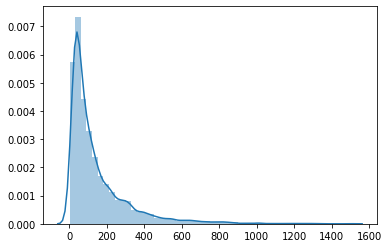
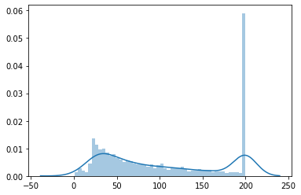
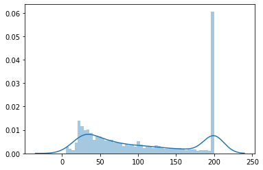

自从NLP中有了word2vec算法过后, 基于它的思想, 出现了一些衍生的算法, 有改进原理的, 也有跨领域运用的.
item2vec就是将word2vec的使用范围进行扩展, 从原本的单词, 字符, 变成了任何离散序列的item, 本篇主要讲解item2vec在推荐系统中的使用.
前言
如果还有对word2vec原理不太了解的同学, 可以参看我的这篇文章.
word2vec本质上, 就是通过在序列中, 寻找一种共现模式, 即将相邻的词看做具有更高的相关性, 并将这种关系, 在向量空间中进行表达.
而这种算法本身其实并不限定只能用在NLP领域, 理论上只要是离散序列, 就可以使用word2vec进行Embedding.
原理
在明白了word2vec的原理以后, 其实对于item2vec来说, 就没有什么原理好说的了, 这里可以举一些栗子, 来说明item2vec的使用方式.
首先, 这里的item是什么呢? 在推荐系统中, 通常用户是随着时间有一系列的行为的, 对典型的, 就是与物品之间的交互行为, 比如对物品的点击, 收藏, 评价等. 如果将某个用户在一段时间内交互的物品串起来, 那么不就是构成了一个序列了吗, 而这里的物品, 就等价于word2vec中的token, 这就是item2vec.
然后, 通过item2vec算法得到了每个物品的Embedding, 怎么使用呢? 在前面的一些推荐系统的文章中, 几乎都是属于U2I(user2item), 意思是使用能够表征用户的向量, 去匹配物品, 那么在item2vec这里, 就可以算作I2I(item2item), 即可以通过用户喜欢的物品的向量, 去匹配其它物品.
同时, item2vec不仅仅可以用来做I2I, 还可以像NLP中的预训练词向量一样, 服务于其它算法模型. 比如在一些排序模型中, 要使用用户近期有过交互的物品的平均向量表示, 而如果随机初始化训练, 可能会由于要同时学习向量表示和其它模型参数, 会比较困难. 而使用item2vec的向量来进行初始化, 随后或者固定不训练, 或者微调, 大概率来说会取得更好的效果, 收敛得更快.
此外, 我个人认为在做比较细致的处理时, 需要对用户原始的行为序列做划分, 划分为一些子序列, 然后再输入word2vec算法. 因为即使是一个用户的行为序列, 但是在不同时期, 不同场景下, 可能其目的和行为有着一定的偏向性, 比如以看视频为例, 也许用户在白天的时候喜欢看一些学习类的视频, 晚上喜欢看一些娱乐类的视频, 此时将它们划分开, 学习到的Embedding可能会更好一些
代码
这里主要使用item2vec算法来获取物品的Embedding, 然后利用I2I来进行召回.
对于训练item2vec, 会对比自己写的一个简单算法, 和成熟的word2vec算法.
数据准备
这里使用的数据, 是经典的movielens的MovieLens 1M Dataset.
其中包含约100万的用户对电影的打分记录, 由约6000用户对约4000电影打分而得到.
包含3份数据, 一份是打分文件”rating.dat”, 格式为用户ID::电影ID::打分::时间戳, 并且:
- 用户ID在1到6040之间.
- 电影ID在1到3952之间.
- 打分有5个等级.
- 每个用户至少有20条打分记录.
一份是用户文件”user.dat”, 格式为用户ID::性别::年龄::职业::邮编.
还有一份电影文件”movies.dat”, 格式为电影ID::电影名称::风格流派.
为了防止一些过于活跃的用户占主导影响, 会截取活跃用户近期的观看记录, 同时对于一些过短的观看记录进行过滤.
1 | # 读取数据 |
| user_id | item_id | score | time | |
|---|---|---|---|---|
| 0 | 1 | 1193 | 5 | 978300760 |
| 1 | 1 | 661 | 3 | 978302109 |
| 2 | 1 | 914 | 3 | 978301968 |
| 3 | 1 | 3408 | 4 | 978300275 |
| 4 | 1 | 2355 | 5 | 978824291 |
1 | # 按时间分为训练集和测试集 |
1 | # 整合每个用户的观看序列 |
1 | [('85', '974691498'), |
1 | # 序列长度分布 |

1 | # 对长于200的序列进行截断 |

1 | # 对小于5的序列进行剔除 |

1 | # 将测试集中新出现的用户与电影过滤掉 |
1 | (129815, 4) |
1 | # 训练数据序列 |
模型训练(gensim)
1 | # 训练模型 |
1 | # 获取词表, 以及每个词汇的词向量 |
1 | 词表大小为3202 |
1 | # 统计测试集上每个用户点击的物品 |
1 | # 将用户近期观看的100部影片的Embedding进行平均池化 |
1 | # 为每个用户寻找感兴趣的200电影(去除已观看) |
1 | # 计算查准率, 查全率, F1 |
1 | Precision: 0.1213, Recall: 0.2064, F1: 0.1528 |
模型训练(TF)
1 | # coding=utf-8 |
1 | from collections import defaultdict |
1 | keras.backend.clear_session() |
1 | 966/966 [==============================] - 613s 635ms/step - loss: 0.5914 |
1 | # 获取Embedding |
1 | 词表大小为3203 |
1 | # 对每个用户统计已经看过的电影 |
1 | # 统计测试集上每个用户点击的物品 |
1 | # 将用户近期观看的100部影片的Embedding进行平均池化 |
1 | # 为每个用户寻找感兴趣的物品(去除已观看) |
1 | # 计算查准率, 查全率, F1 |
1 | Precision: 0.1398, Recall: 0.2378, F1: 0.1761 |
相似超参数下, 相比使用gensim中的word2vec算法来做item2vec, 这里自己实现的在这份数据集上表现还要好一些, 哈哈 ♪(^∇^*)
小结
以上, 对item2vec的原理进行了介绍, 然后在一份数据集上, 整理用户观看影片的行为序列, 基于word2vec算法来计算物品Embedding. 同时自己这边也使用TensorFlow实现了item2vec算法, 对比成熟的gensim中的word2vec算法, 效果并没有差.
Item2vec某种意义上, 是直接效仿word2vec, 对物品序列进行建模, 那么有没有这样方法的升级版呢? 有的哦 ♪(^∇^*) 比如DeepWalk.